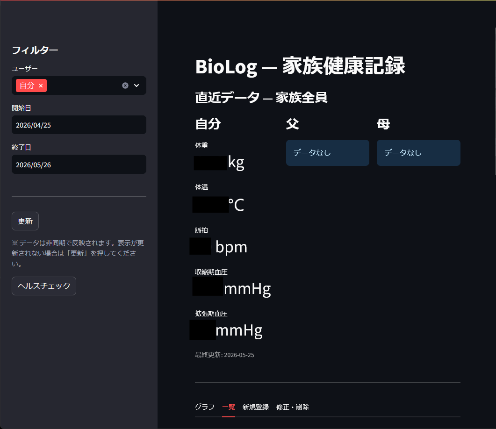
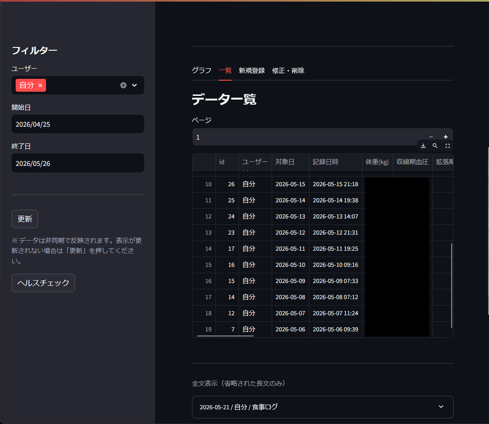
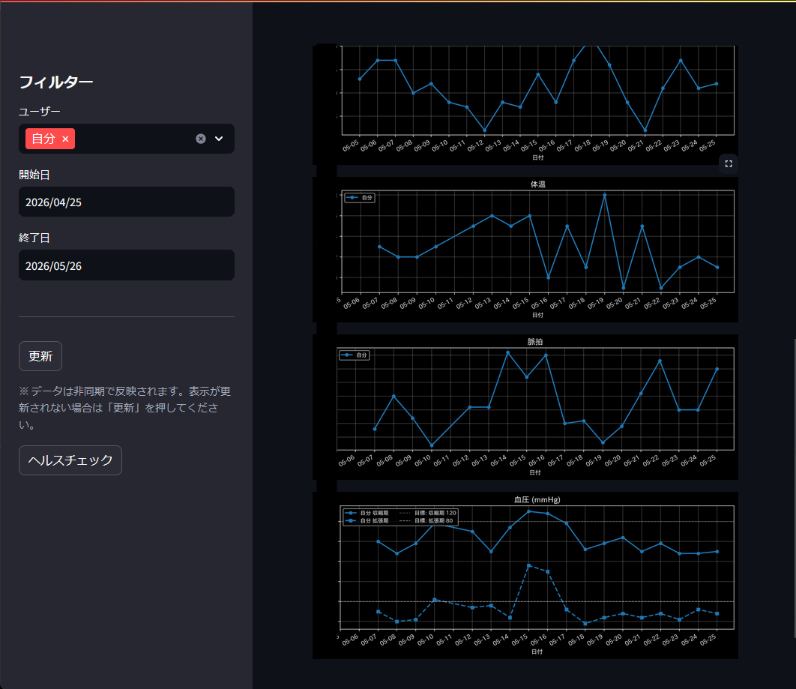

Personal & family health record
BioLogで
できること
毎日の健康記録を、入力・確認・比較・保存まで。初心者向けにやさしく紹介します。
BioLog v1.7.5 相当 / リポジトリ確認日 2026-08-15
01 / Overview
毎日の健康記録を、1台のPCで完結
- 自分・父・母の記録を分けて管理
- ブラウザ画面からかんたん入力
- 標準ではデータをPC内に保存

02 / What to record
1日分の記録は、数値とメモを一緒に
からだ体重・体温・体脂肪率・筋肉量
循環収縮期血圧・拡張期血圧・脈拍
エネルギー基礎代謝
暮らし食事ログ・行動ログ・メモ
全部を埋める必要はありません。測れた項目か文章を、1つ以上入力すれば登録できます。
03 / Main screen
見る・比べる・書き出すが1画面
- 最新データをひと目で確認
- 期間と人を選んで絞り込み
- 4つのタブで迷わず操作

04 / Daily flow
使い方は「選ぶ → 記録 → 確認」
- 人と日付を選ぶ
自分・父・母から記録する人を決めます。 - 測定値やメモを入力する
空欄があってもかまいません。 - 登録して振り返る
最新値・グラフ・一覧で確認します。
反映に少し時間がかかるときは、左側の「更新」を押すと最新データを取り直せます。
05 / Graph
変化は4種類のグラフで追える
- 体重
- 体温
- 血圧（上・下）
- 脈拍
複数の人を選ぶと、色分けして同じ期間を比べられます。

06 / List & CSV
一覧は20件ずつ、CSVは期間の全件
| 画面の一覧 | 新しい記録から20件ずつ表示 |
|---|---|
| 長い文章 | 画面では省略し、必要な部分だけ展開 |
| CSV | 選んだ人・期間に合う全件を全文で保存 |
| 文字コード | Excelで開きやすいUTF-8 BOM付き |
CSVには健康情報が含まれます。公開場所や共有フォルダーへの保存には注意してください。
07 / One day, one record
同じ人・同じ日は1件に整理
- 同じ日にもう一度登録しても、行は増えません
- 入力した測定値だけを更新します
- 空欄の測定値は、前の値を残します
- 食事・行動ログは、重ならない行を追加します
入力ミスは「修正・削除」から直せます。削除は対象を確認してから実行します。
08 / Privacy
ローカル保存でも、公開設定には注意
標準は同じPCだけで使う設計です
データはSQLiteファイルに保存され、健康記録を外部へ自動送信しません。一方で、ログイン認証・HTTPS・レート制限はありません。
- localhost限定のまま使う
- そのままインターネットへ公開しない
- 重要な記録は定期的にバックアップする
09 / Fit
このアプリが向く人・向かない用途
| 向く | 自分や家族の毎日の記録、少人数、ローカル運用 |
|---|---|
| 向く | グラフでの振り返り、CSVでの個人保管 |
| 向かない | 医療診断、治療判断、業務での第三者情報管理 |
| 向かない | インターネット公開、大人数利用、権限管理 |
BioLogは日々の記録を助ける道具です。医学的な判断は専門家に相談してください。
10 / Start
まずは3ステップで始めよう
- Docker Desktopを起動する
start_biolog.batを実行する- ブラウザの
http://localhost:8501で記録する
記録する → 変化を見る → 必要ならCSVに残す。これがBioLogの基本です。
内容の根拠: README.md、CHANGELOG.md、画面・API・入力検証の現行コード、PRIVACY_POLICY.md、TERMS_OF_USE.md。外部素材・外部通信は使用していません。